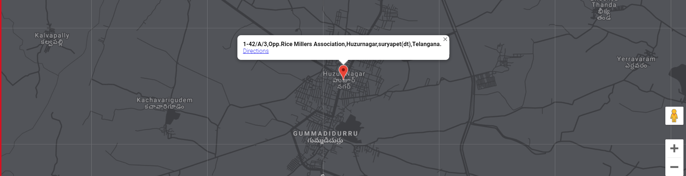

|
AREA OF INTERESTS |
|
Analog and Digital Communication |
|
Mobile Communication and Networks |
|
PROJECTS |
|
Removing of noise in the channel |
Duration/Period: 3 Weeks Objective: DSBSC Modulation of Recorded audio signal and To reduce the noise added in channel to the great extent possible from Transmitter to Receiver Tools Used: Python(anaconda), Sound device Outcome: Coded Program to get recorded signal at receiver end. |
Cartooning of an image |
Location: Amrita School of Engineering,Coimbatore Duration/Period: 1 Month Objective: To convert an input image given in to cartoon where Smoothening and edge preserving of image is done by applying bilateral filtering and converted to grey scale and it is blurred and edged and it is converted in to RGB image.This is combined with previously smoothened image. Tools Used: Python(anaconda),OpenCV. Outcome: Coded Programm to get an output as cartoon |
|
|  |